18 - ALU
Created Friday 18 March 2016
Subtracter:
Adder can add positive and negative numbers using two’s complement representation.
Subtraction: inverting the bits and adding 1.
Flipping the sign of a two’s complement number is done by inverting the bits and adding 1.
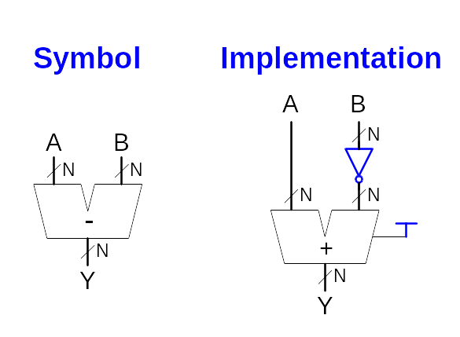
Subtraction: inverting the bits and adding 1.
Flipping the sign of a two’s complement number is done by inverting the bits and adding 1.
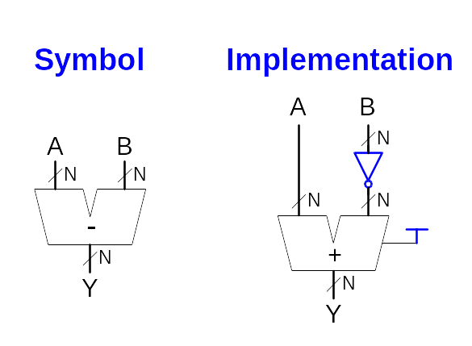
Comparators:
Equality:
A comparator determines whether two binary numbers are equal or if one is greater or less than the other.
An equality comparator produces a single output indicating whether A is equal to B
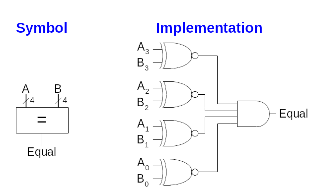
An equality comparator produces a single output indicating whether A is equal to B
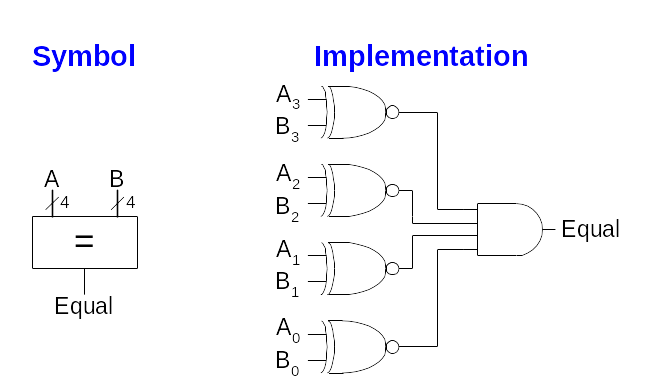
Less Than:
Magnitude comparison is done by computing A - B and looking at the sign (most significant bit) of the result.
If the result is negative (i.e., the sign bit is 1), then A is less than B. otherwise A is greater than or equal to B
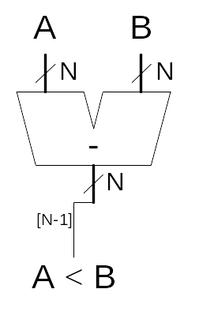
If the result is negative (i.e., the sign bit is 1), then A is less than B. otherwise A is greater than or equal to B
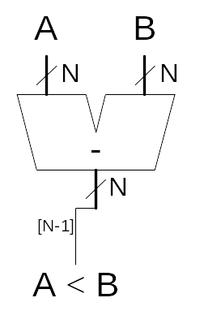
Arithmetic/Logic Unit (ALU):
An ALU combines a variety of mathematical and logical operations into a single unit. (addition, subtraction, magnitude comparison, AND, OR operations)
A control signal F specifies which function to perform
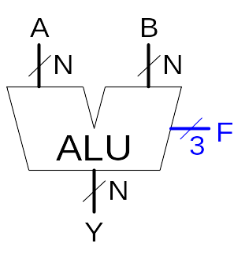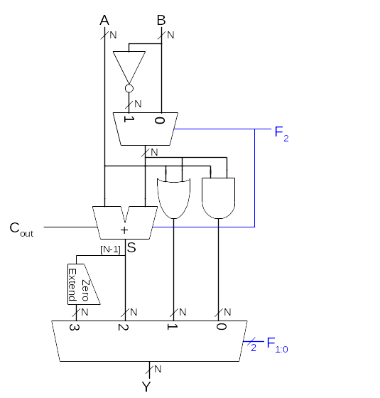
A control signal F specifies which function to perform
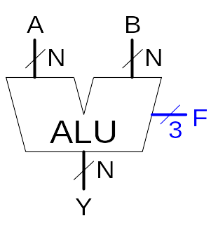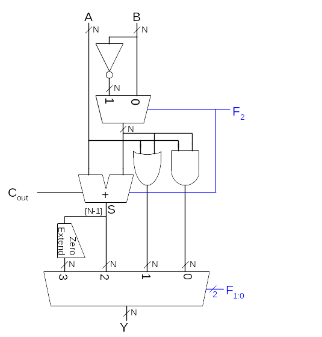
Shifters and Rotators:
Logical Shifter:
Shifts value to left (LSL) or right (LSR) and fills empty spaces with 0’s
Ex: 11001 >> 2 = 00110
Ex: 11001 << 2 = 00100
Ex: 11001 >> 2 = 00110
Ex: 11001 << 2 = 00100
Arithmetic Shifter:
Same as logical shifter. But on right shift, fills empty spaces with the old most significant bit (msb). Useful for multiplying and dividing signed numbers
Ex: 11001 >>> 2 = 11110
Ex: 11001 <<< 2 = 00100
Ex: 11001 >>> 2 = 11110
Ex: 11001 <<< 2 = 00100
Rotator:
Rotates bits in a circle, such that bits shifted off one end are shifted into the other end
Ex: 11001 ROR 2 = 01110
Ex: 11001 ROL 2 = 00111
Ex: 11001 ROR 2 = 01110
Ex: 11001 ROL 2 = 00111
Shifter Design:
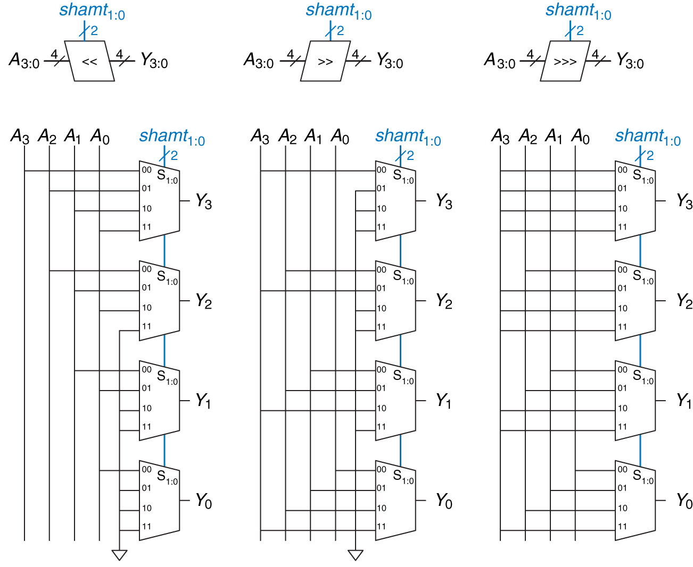5
(a) Shift left (b) logical shift right (c) arithmetic shift right
The output of YX is equal to the input of the amount we shifted. So if we shift by 2 YX = input 10
(a) Shift left (b) logical shift right (c) arithmetic shift right
The output of YX is equal to the input of the amount we shifted. So if we shift by 2 YX = input 10
Fractions:
Fixed-point: binary point fixed
Floating-point: binary point floats to the right of the most significant 1
6.75 using 4 integer bits and 4 fraction bits:
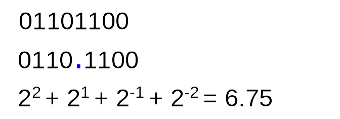
0.75 < 0.5, so there is a 1 in the 2-1 column, leaving 0.75 – 0.5 = 0.25
0.25 ≥ 0.25, so there is a 1 in the 2-2 column, leaving 0
0.0 < 0.125, so there is a 0 in the 2-3 column
0.0 < 0.0625, so there is a 0 in the 2-4 column
Floating-point: binary point floats to the right of the most significant 1
6.75 using 4 integer bits and 4 fraction bits:
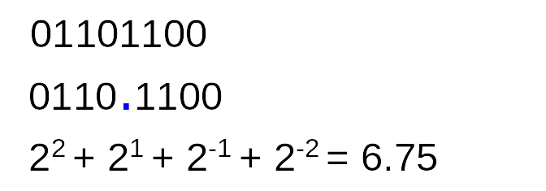
0.75 < 0.5, so there is a 1 in the 2-1 column, leaving 0.75 – 0.5 = 0.25
0.25 ≥ 0.25, so there is a 1 in the 2-2 column, leaving 0
0.0 < 0.125, so there is a 0 in the 2-3 column
0.0 < 0.0625, so there is a 0 in the 2-4 column
Numbers before the dot (.) are as before. Numbers after the dot are negative powers (eg 2^(-1) then 2^(-2) etc)
Binary point is implied
The number of integer and fraction bits must be agreed upon beforehand
Binary point is implied
The number of integer and fraction bits must be agreed upon beforehand
Converting Negative Fraction Number To Binary Fraction:
Eg number: -17.15625
1) Write down the non fraction bit followed by the fraction: 00010001.00101000
2) Convert it to twos complement by flipping bits and adding 1: 11101110.11010111 +1 = 11101110.11011000
1) Write down the non fraction bit followed by the fraction: 00010001.00101000
2) Convert it to twos complement by flipping bits and adding 1: 11101110.11010111 +1 = 11101110.11011000
Backlinks: Lectures:Assembly:1 - Assembly Language 1